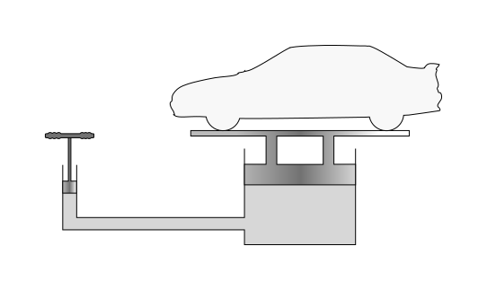

By definition, pressure is the amount of force you apply on a surface. The formula is simple:$$p=\frac{F}{A}$$The unit here is N/m², otherwise known as Pascal (Pa), 1 Pa = 1 N/m².
| Name | Unit | Symbol |
|---|---|---|
| Pressure (p) | Pascal | Pa |
On a completely different note, this formula also helps us define a formula for how much energy is inside a given volume.You can do this by multiplying the formula for pressure by distance, to make it 3D!$$p=\frac{N⋅d}{A⋅d}=\frac{W}{V}=\frac{E}{V}$$
The average atmospheric pressure is equal to 101325 Pa. There is positive pressure (overpressure) if the pressure on a surface is larger. For example, say you have a pressurized container laying on the ground outside. The pressure inside is larger than the atmospheric pressure outside. This can lead to the container exploding, similar to a volcano erupting.
Negative pressure (underpressure) is caused when the pressure is lower, causing air to be sucked in. An example of this is a vacuum cleaner, where air is blown out from the top, causing negative pressure inside the machine. This causes it to suck up air (and debris).
Hydrostatic pressure is the pressure you or an object feel(s) while submerged in a liquid, as caused by gravity's force acting on the liquid. This is proportional to the depth (h) in the liquid, the gravity acceleration (g) and the density (ρ) of the liquid. Let's derive an equation. We know the following:$$F=mg$$ $$p=\frac{F}{A}$$Mixing these gives us this:$$p=\frac{mg}{A}$$The definition of density says:$$ρ=\frac{m}{V}$$so we calculate that to m= and replace it.$$p=\frac{ρVg}{A}$$Volume is simply area times height, so we finish with this:$$p_{hydro}=ρgh$$In a liquid we will also feel the atmospheric pressure from above, so the actual total we'd feel there is:$$p=p_{0}+ρgh$$where p0 is atmospheric pressure (at sea level).
We now know why that Titanic submersible imploded thousands of meters in the ocean.
| Name | Unit | Symbol |
|---|---|---|
| Density (ρ) | Kilograms per cubic meter | kg/m³ |
Pascal's Law states that a change in pressure in a liquid is transmitted through the liquid so that the pressure is changed everywhere. This is how a hydraulic press (or jack) works.
 From WikipediaAs you can see in this image, pushing down on the lever will put pressure on the liquid below, which will cause a change in pressure over the entire liquid, as per Pascal's Law. The pressure will thus travel through the liquid until it reaches the hydraulic jack under the car, the pressure will be "converted" into a force that pushes the car up. Logically, the smaller the area to push up, the more force.
Archimedes was the one to discover buoyancy, he said the following:
Any object, wholly or partially immersed in a fluid, is buoyed up by a force equal to the weight of the fluid displaced by the object
When you place something in water, it can float. If you look at it closely, it might appear that a part of it is submerged in the water, while another part is not. Archimedes concluded that there is a difference in pressure between the top and bottom of the object, which causes a buoyant force. We can calculate whether the object will sink or float in all possible scenarios by comparing the weight of the water that is being dispersed by the submerged part of our object to the weight of our entire object.
If you know what volume of the object is submerged, and the total volume, you can calculate the weight of the entire object using that object's density. You can then calculate the weight of the dispersed water by multiplying the volume of the submerged part by the density of water.
You then multiply both weights by 9.81 to get a force value (buoyant force and gravitational force). If the buoyant force is higher than the gravitational force, the object floats. If they are equal, the object stays where it is. If the gravitational force is greater, the object sinks.
If an object is fully submerged in water, it can either sink or float. In this scenario, the volume of the entire object is equal to the volume of the dispersed water. This means that the weights (and also the forces) are dependant on the density of your object and water. If your object's density is higher than that of water, the gravitational force will be greater than the buoyant force, and the object sinks. If your object's density is lower than that of water, the buoyant force will be greater than the gravitational force and your object will float up. This allows you to accurately calculate how high an object will float in any liquid.
This image is here to clarify. The object is partially submerged. The buoyant force can be calculated by finding the weight of the water dispersed by the orange submerged part of the object. The gravitational force can be calculated by finding the weight of the entire object (black and orange).